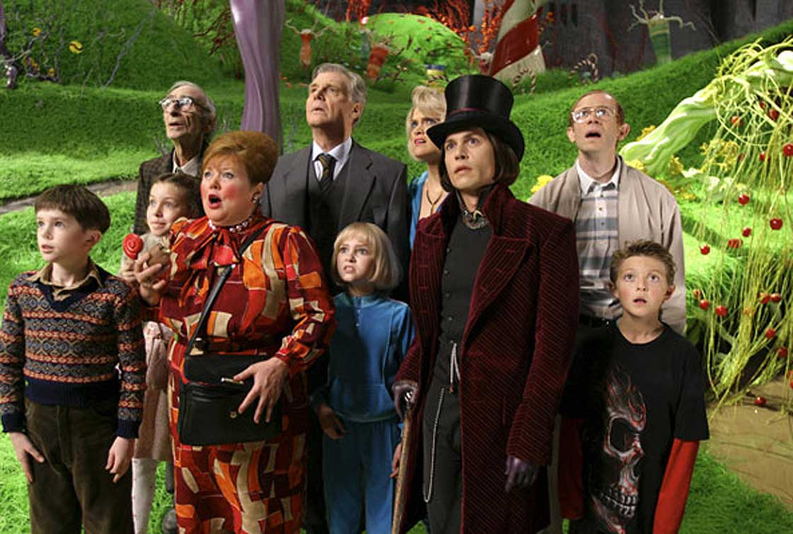

Cada uno de los personajes que participan en esta fabulosa cinta son la representación cinematigráfica de las virtudes y los defectos del ser humano que vienen siendo cultivadas desde la niñez.
La virtud máxima está representada en Charly, el niño que, a pesar de su extrema pobreza, encuentra la felicidad en el amor por su familia. El niño representa el amor, el perdón, la lealtad, la generosidad, etc.
Charlie ama a su familia, es un niño afectuoso y conocedor de la realidad social y económica que vive, aun con todo, es un niño alegre e ilusionado, capaz de asombrarse por los descubrimientos de Wonka y todo lo que le rodea.
Charlie supone, a través de sus virtudes, un antídoto para los defectos de los demás niños y del propio Wonka. Ante la soberbia, Charlie es humilde; ante la codicia y la envidia por el triunfo, es generoso; ante los arrebatos de ira provocados por la frustración, él se muestra paciente; ante la gula representada por Augustus, Charlie es austero y comedido; ante la indolencia, se muestra activo y diligente.
Finalmente, ante las actitudes de rechazo hacia la familia que encabeza Wonka, pero que en cierto modo todos los niños manifiestan, Charlie considera a su familia como el bien más preciado, es capaz de renunciar a su premio para estar junto a ellos, porque le aportan todo lo que necesita para ser feliz, todo lo que le falta al industrial chocolatero (“No dejaría mi familia por nada. Ni por todo el chocolate del mundo”).
Willy Wonka es un hombre inmaduro, que no es capaz de asumir sus contradicciones y defectos, de resolver sus conflictos relacionales y busca en el aislamiento y en la adicción al trabajo una forma de escapar de su desajustada autoestima. Wonka no puede pronunciar la palabra “padres” y todo gesto afectivo le provoca una náusea contenida. Con la huida familiar ha intentado compensar el vacío personal y los complejos que, además, le han hecho rico (“Mírame a mí, no he tenido familia y me he hecho de oro”). Sin duda, nos presenta un modelo de educación paterna que añadir a la del resto de los niños.
Los Ompa Loompa, diminutos obreros de la fábrica, traídos del África, vienen a ser como los espíritus elementales de la naturaleza, pequeños seres llenos de sabiduría que señalan los defectos en el comportamiento de los niños.

Augustus Gloop “come tantas chocolatinas al día que era imposible que no encontrara una”, afirma la madre. Este orondo alemán de Dusseldorf, víctima de una dieta poco saludable y de una educación permisiva, representa la gula, el instinto primario, la bajeza moral. El desajuste de su autoestima se compensa devorando tabletas Wonka bajo la mirada satisfecha de sus padres, que regentan una carnicería para subrayar así el tópico de alemán rubio, con unos kilos de más y devorador de salchichas.
Violet Beauregarde aparece como una niña muy segura de sí misma, pero también es incapaz de controlar sus ansias por conseguir la victoria probando el nuevo chicle del Sr.Wonka, desoyendo sus avisos, que le harán convertirse en un arándano. El hábito de mascar chicle es cuestionado por el propio Willy (“Eso le pasa por no parar de comer chicle, es asqueroso”) y por los Oompa-Loompa en su canción (“Tanta gimnasia dental, tus músculos crecen tan mal “). Puede ser positivo tener voluntad para conseguir un fin, pero es importante valorar y escoger nuestros objetivos de forma adecuada.
Veruca Salt Si los padres de Augustus consentían su comportamiento, Veruca va más allá y exige constantemente cosas a sus acaudalados padres. A lo largo de la narración cinematográfica, observamos la actitud despótica de la niña con sus padres. Cuando están esperando para entrar en la fábrica de Wonka escuchamos un diálogo insólito entre padre e hija: “Papá ¡quiero entrar ahora mismo! / Cielo, aún falta un minuto/ ¡Haz que el tiempo pase más rápido!”. Finalmente, sucumbirá a causa de su propio carácter que todo lo desea: “¡Quiero una ardilla! ¡Dame una de esas ardillas!, exige en la sala de las ardillas, a pesar de tener en casa un montón de mascotas. La canción nos dice que Veruca terminó en la basura con sus amigos los desperdicios, con lo que nadie quiere y huele mal.
Mike Tevé es un inteligente niño de Denver que vive pegado a la pantalla de la televisión y los videojuegos y que odia el chocolate. Se considera muy listo y desprecia a todo el mundo, incluyendo a sus padres que se muestran desconcertados. Caracterizado por esa actitud despectiva, cuestiona sin cesar las opiniones de Willy Wonka y su elevada autosuficiencia le conduce a experimentar el sistema de teletransporte que reducirá su tamaño al de un muñequito o personaje de videojuego. Los Oompa-Loompa, en un cinematográfico concierto, destacan lo poco saludable que resulta la dependencia de las pantallas porque anula nuestra capacidad creativa y comunicativa.